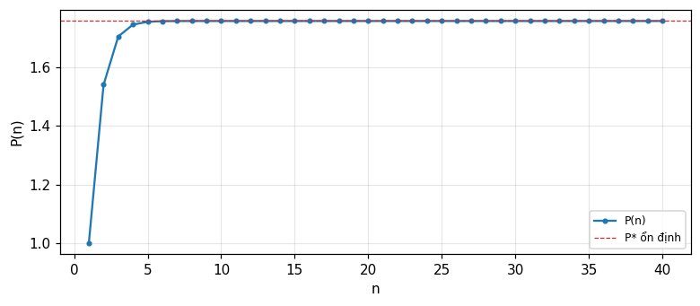

Nguyên lý trực giao và biến đổi tuyến tính, lọc Wiener không khả thi và khả thi (phân tích phổ), lọc Wiener rời rạc và phương trình chuẩn tắc, lọc Kalman qua khái niệm đổi mới (innovations) (Barkat, chương 7).
Phát biểu và chứng minh nguyên lý trực giao, và dùng nó để suy ra ước lượng tuyến tính bình phương tối thiểu đơn giản nhất.
Suy ra bộ lọc Wiener không khả thi H(f)=S_{sy}(f)/S_{yy}(f) và tính sai số bình phương tối thiểu tương ứng.
Giải phương trình Wiener–Hopf cho bộ lọc khả thi bằng phân tích phổ (spectral factorization), tách S_{yy}(f) thành các thừa số nhân quả và phản nhân quả.
Dựng bộ lọc Wiener rời rạc từ phương trình chuẩn tắc R_{YY}\omega=R_{Ys}, và nhận ra đây chính là bình phương tối thiểu của module 22 áp cho một bộ lọc.
Suy ra bộ lọc Kalman vô hướng qua khái niệm đổi mới (innovations), tính độ lợi Kalman k(n), và liên hệ lọc Kalman với lọc Wiener khi quá trình dừng.
Dùng nút, chấm tròn hoặc phím ← → để chuyển slide.
PHẦN 1/5
01
Biến đổi tuyến tính và nguyên lý trực giao
Bối cảnh: Lọc: tách tín hiệu S(t) khỏi quan sát nhiễu Y(t)=S(t)+N(t) bằng một biến đổi tuyến tính \hat Y(t)=L[Y(t)] cực tiểu sai số bình phương trung bình.
Vướng mắc: Nguyên lý trực giao: L[\cdot] cực tiểu sai số bình phương trung bình khi và chỉ khi sai số \varepsilon(t) trực giao với toàn bộ dữ liệu quan sát.
Giải pháp: Ví dụ 7.1: ước lượng \hat S(t)=aY(t) đơn giản nhất minh họa toàn bộ máy móc — hệ số a và sai số tối thiểu chỉ phụ thuộc các hàm tương quan tại độ trễ 0.
Lọc, dự đoán, làm mượt
Định lý nguyên lý trực giao
Ví dụ 7.1: ước lượng đơn giản nhất
1/5 · Biến đổi tuyến tính và nguyên lý trực giao
Ba bài toán trong một khung: lọc, dự đoán, làm mượt
Ở chương 6, ta ước lượng các tham số hằng số hoặc ngẫu nhiên. Trong nhiều ứng dụng, mục tiêu thực ra là ước lượng cả một dạng sóng tín hiệu từ phiên bản nhiễu của nó, theo cách tối ưu. Quan sát Y(t) được thu trên khoảng t\in[t_i,t_f]; nếu t<t_i bài toán là dự đoán ngược (backward prediction), nếu t>t_f là dự đoán xuôi (forward prediction), và nếu t\in[t_i,t_f] là làm mượt (smoothing). Quá trình trích xuất tín hiệu mang thông tin S(t) từ Y(t)=S(t)+N(t) gọi là lọc (filtering) (Barkat, tr. 399 đến 400).
1/5 · Biến đổi tuyến tính và nguyên lý trực giao
Biến đổi tuyến tính: định nghĩa và tính chất
Ước lượng cần tìm là một biến đổi tuyến tính của dữ liệu quan sát, \hat Y(t)=L[Y(t)], cực tiểu sai số bình phương trung bình E[\varepsilon^2(t)]=E[(Y(t)-\hat Y(t))^2]. Biến đổi L[\cdot] là tuyến tính nếu L[a_1Y_1(t)+a_2Y_2(t)]=a_1L[Y_1(t)]+a_2L[Y_2(t)]; hiệu của hai biến đổi tuyến tính cũng tuyến tính, và với biến đổi tuyến tính, phép lấy kỳ vọng và biến đổi giao hoán được: E\{L[\cdot]\}=L\{E[\cdot]\} (Barkat, tr. 400 đến 401).
1/5 · Biến đổi tuyến tính và nguyên lý trực giao
Định lý nguyên lý trực giao
Biến đổi tuyến tính L[\cdot] là ước lượng bình phương tối thiểu trung bình khi và chỉ khi sai số \varepsilon(t) trực giao với dữ liệu Y(\xi) với mọi \xi\in[t_i,t_f]: E[\varepsilon(t)Y(\xi)]=0. Chứng minh dựa trên việc so sánh một ước lượng L_1 tùy ý với ước lượng L_2 có sai số trực giao với dữ liệu; hiệu L=L_2-L_1 cũng tuyến tính, và khai triển bình phương cho e_m=E[\varepsilon_2^2(t)]+E\{[L(Y(\xi))]^2\}\ge E[\varepsilon_2^2(t)], với đẳng thức khi và chỉ khi L=0 — tức L_1=L_2 (Barkat, tr. 401 đến 403).
Dùng chính nguyên lý trực giao, E[\{S(t)-\hat S(t)\}Y(\xi)]=0; nhân cả hai vế với \hat S(t)=L[Y(\xi)] (chính nó là tổ hợp tuyến tính của Y(\xi)) và trừ, sai số bình phương tối thiểu rút gọn thành e_m=E[\{S(t)-\hat S(t)\}S(t)] — không cần biết \hat S(t) tường minh, chỉ cần biết các hàm tương quan (Barkat, tr. 403).
1/5 · Biến đổi tuyến tính và nguyên lý trực giao
Ví dụ 7.1: ước lượng đơn giản nhất \hat S(t)=aY(t)
Với Y(t)=S(t)+N(t), S,N dừng nghĩa rộng trung bình 0, tìm hằng số a sao cho \hat S(t)=aY(t) tối ưu. Nguyên lý trực giao cho E\{[S(t)-aY(t)]Y(t)\}=R_{sy}(0)-aR_{yy}(0)=0, tức a=R_{sy}(0)/R_{yy}(0). Sai số tối thiểu là e_m=R_{ss}(0)-aR_{sy}(0)=R_{ss}(0)-R_{sy}^2(0)/R_{yy}(0) (Barkat, tr. 403 đến 405). Nếu S,N độc lập, R_{sy}(0)=R_{ss}(0) và R_{yy}(0)=R_{ss}(0)+R_{nn}(0), cho a=R_{ss}(0)/[R_{ss}(0)+R_{nn}(0)] và e_m=R_{ss}(0)R_{nn}(0)/[R_{ss}(0)+R_{nn}(0)].
Số đo: a, e_m, và trực giao được kiểm chứng bằng số
Số đo: với R_{ss}(0)=4, R_{nn}(0)=1 (độc lập), hệ số a = 0.8, sai số tối thiểu e_m = 0.8. Mô phỏng Monte Carlo với S,N Gauss độc lập phương sai tương ứng: giá trị E[(S-aY)Y] đo được tại chính a này là -4.08e-03 (gần 0), xác nhận trực tiếp điều kiện trực giao đã dùng để suy ra a.
1/5 · Biến đổi tuyến tính và nguyên lý trực giao
Tự kiểm tra phần 1
Khi t nằm ngoài khoảng quan sát [t_i,t_f] và t>t_f, bài toán gọi là gì?
Nguyên lý trực giao phát biểu điều kiện gì cho ước lượng tối ưu?
Trong Ví dụ 7.1, hệ số a tối ưu bằng tỉ số của những đại lượng nào?
Gợi ý: dự đoán xuôi (forward prediction); sai số trực giao với toàn bộ dữ liệu quan sát; R_{sy}(0)/R_{yy}(0).
PHẦN 2/5
02
Lọc Wiener không khả thi
Bối cảnh: Với dữ liệu là cả một quá trình X(\xi), ước lượng tuyến tính tổng quát là một tích phân \hat Y(t)=\int h(\xi)X(\xi)\,d\xi; nguyên lý trực giao cho phương trình Wiener–Hopf.
Vướng mắc: Nếu h không bị ràng buộc nhân quả ("không khả thi"), phương trình giải được gọn trong miền tần số: H(f)=S_{sy}(f)/S_{yy}(f).
Giải pháp: Khi S,N độc lập, H(f)=S_{ss}(f)/[S_{ss}(f)+S_{nn}(f)], và sai số tối thiểu e_m=\int S_{ss}S_{nn}/(S_{ss}+S_{nn})\,df triệt tiêu khi phổ tín hiệu và nhiễu không chồng lấp.
Phương trình Wiener–Hopf không ràng buộc
Giải trong miền tần số
Số đo: H(f) và sai số tối thiểu
2/5 · Lọc Wiener không khả thi
Từ hằng số a đến hàm trọng số h(\xi)
Tổng quát hóa Ví dụ 7.1: dữ liệu giờ là cả một quá trình X(\xi) trên \xi\in[t_i,t_f], và ước lượng là \hat Y(t)=\int_{t_i}^{t_f}h(\xi)X(\xi)\,d\xi. Nguyên lý trực giao cho phương trình tích phân R_{yx}(t-\lambda)=\int_{t_i}^{t_f}R_{xx}(\xi-\lambda)h(\xi)\,d\xi với mọi \lambda\in[t_i,t_f] — giải phương trình này cho h(\xi) (Barkat, tr. 409 đến 410).
2/5 · Lọc Wiener không khả thi
Không ràng buộc nhân quả: giải gọn trong miền tần số
Nếu Y(t)=S(t)+N(t) quan sát trên toàn trục thời gian và bộ lọc không bị ràng buộc nhân quả (\"không khả thi\", h(t-\xi) có thể khác 0 với t<\xi), phương trình trực giao trở thành phép chập R_{sy}(\tau)=R_{yy}(\tau)*h(\tau). Biến đổi Fourier hai vế cho ngay S_{sy}(f)=S_{yy}(f)H(f), tức H(f)=S_{sy}(f)/S_{yy}(f) (Barkat, tr. 410 đến 411).
Bộ lọc Wiener không khả thi
H(f)=\frac{S_{sy}(f)}{S_{yy}(f)}
2/5 · Lọc Wiener không khả thi
Khi tín hiệu và nhiễu độc lập
Nếu S(t) và N(t) độc lập, S_{sy}(f)=S_{ss}(f) và S_{yy}(f)=S_{ss}(f)+S_{nn}(f), nên H(f)=S_{ss}(f)/[S_{ss}(f)+S_{nn}(f)]. Sai số tối thiểu rút gọn thành e_m=\int_{-\infty}^\infty \dfrac{S_{ss}(f)S_{nn}(f)}{S_{ss}(f)+S_{nn}(f)}\,df (Barkat, tr. 411 đến 412). Nếu phổ tín hiệu và nhiễu không chồng lấp (S_{ss}(f)=0 khi S_{nn}(f)\ne0 và ngược lại), H(f) trở thành bộ lọc lý tưởng 0/1, và e_m=0 — lọc hoàn hảo.
Số đo: với S_{ss}(f)=1/(1+4\pi^2f^2) (tương ứng R_{ss}(\tau)=\tfrac12e^{-|\tau|}) và S_{nn}(f)=1 (nhiễu trắng), H(0) = 0.5 và H tại f=1 Hz là 0.0241 — giảm dần khi tần số tăng, đúng như kỳ vọng vì năng lượng tín hiệu tập trung ở tần số thấp trong khi nhiễu trắng trải đều.
Hình 1. Bộ lọc Wiener không khả thi H(f) cho tín hiệu thông thấp trong nhiễu trắng: hệ số truyền giảm dần khi tần số tăng.
2/5 · Lọc Wiener không khả thi
Số đo: sai số tối thiểu, hai cách tính khớp nhau
Sai số tối thiểu có thể tính bằng công thức tần số e_m=\int S_{ss}S_{nn}/(S_{ss}+S_{nn})\,df, hoặc bằng công thức thời gian e_m=R_{ss}(0)-\int_{-\infty}^\infty R_{sy}(\xi)h(\xi)\,d\xi sau khi lấy biến đổi Fourier ngược của H(f) để có h(t). Số đo: công thức tần số cho e_m = 0.3529, công thức thời gian (dùng h(t) tính số) cho e_m = 0.3536 — hai cách khớp nhau trong sai số lưới, xác nhận cùng một kết quả từ hai con đường độc lập.
2/5 · Lọc Wiener không khả thi
Tự kiểm tra phần 2
Bộ lọc \"không khả thi\" (unrealizable) có ràng buộc gì bị nới lỏng so với bộ lọc thực tế?
Khi S,N độc lập, H(f) viết theo S_{ss} và S_{nn} như thế nào?
Sai số tối thiểu e_m bằng 0 khi nào?
Gợi ý: ràng buộc nhân quả h(t)=0 với t<0; H(f)=S_{ss}(f)/[S_{ss}(f)+S_{nn}(f)]; khi phổ tín hiệu và nhiễu không chồng lấp nhau.
PHẦN 3/5
03
Lọc Wiener khả thi: phân tích phổ
Bối cảnh: Với ràng buộc nhân quả h(t)=0, t<0, phương trình trực giao chỉ đúng với \tau\ge0 — đây là phương trình Wiener–Hopf, không giải trực tiếp bằng biến đổi Fourier được.
Vướng mắc: Phân tích phổ: tách S_{yy}(f)=S_{yy}^+(f)S_{yy}^-(f) theo cực/không điểm ở nửa mặt phẳng trái/phải, rồi tách tiếp S_{sy}/S_{yy}^- thành phần nhân quả B^+ và phản nhân quả.
Giải pháp: Bộ lọc khả thi tối ưu là H(f)=B^+(f)/S_{yy}^+(f) — luôn nhân quả vì mọi cực nằm ở nửa mặt phẳng trái.
Phương trình Wiener–Hopf
Tách phổ thành nhân quả và phản nhân quả
Ví dụ 7.6, 7.7: hai bộ lọc khả thi bằng số
3/5 · Lọc Wiener khả thi: phân tích phổ
Ràng buộc nhân quả: phương trình chỉ đúng với \tau\ge0
Với h(t)=0, t<0, ước lượng chỉ dùng dữ liệu quá khứ: \hat S(t)=\int_0^\infty Y(t-\xi)h(\xi)\,d\xi. Nguyên lý trực giao cho phương trình Wiener–Hopf R_{sy}(\tau)=\int_0^\infty R_{yy}(\tau-\xi)h(\xi)\,d\xi, chỉ đúng với \tau\ge0 (Barkat, tr. 416 đến 418). Khác với trường hợp không khả thi, không thể lấy biến đổi Fourier trực tiếp vì tích phân chỉ hợp lệ một phía — cần một kỹ thuật khác: phân tích phổ (spectral factorization).
3/5 · Lọc Wiener khả thi: phân tích phổ
Phân tích phổ: tách nhân quả và phản nhân quả
Giả sử S_{yy}(f) là hàm hữu tỉ, tách thành S_{yy}(f)=S_{yy}^+(f)S_{yy}^-(f), với S_{yy}^+(f) có mọi cực/không điểm ở nửa mặt phẳng trái (LHP, ứng với hàm thời gian nhân quả) và S_{yy}^-(f) ở nửa mặt phẳng phải (RHP). Tương tự tách S_{sy}(f)/S_{yy}^-(f)=B^+(f)+B^-(f) theo cực ở LHP/RHP. Cân bằng phần LHP của phương trình biến đổi Fourier cho bộ lọc khả thi tối ưu (Barkat, tr. 418 đến 420).
Bộ lọc Wiener khả thi
H(f)=\frac{B^+(f)}{S_{yy}^+(f)}
3/5 · Lọc Wiener khả thi: phân tích phổ
Vì sao H(f)=B^+(f)/S_{yy}^+(f) luôn nhân quả
B^+(f) và S_{yy}^+(f) đều có mọi cực ở LHP theo cách xây dựng; do đó H(f) cũng có mọi cực ở LHP, và hàm thời gian tương ứng h(t) tự động bằng 0 với t<0 — bộ lọc khả thi mà không cần áp thêm ràng buộc nào nữa. Sai số tối thiểu tương ứng là e_m=\int_{-\infty}^\infty[S_{ss}(f)-S_{sy}(-f)B^+(f)/S_{yy}^+(f)]\,df (Barkat, tr. 420).
3/5 · Lọc Wiener khả thi: phân tích phổ
Ví dụ 7.6: cùng phổ tín hiệu, nhiễu trắng thêm vào
Với R_{ss}(\tau)=e^{-|\tau|}, R_{nn}(\tau)=\delta(\tau) (tức S_{ss}(f)=1/(1+4\pi^2f^2), S_{nn}(f)=1), phân tích phổ cho S_{yy}^+(p)=(p+\sqrt2)/(p+1) với p=j2\pi f, và bộ lọc khả thi tối ưu là H(p)=(\sqrt2-1)/(p+\sqrt2), tức h(t)=\dfrac{1}{1+\sqrt2}e^{-\sqrt2\,t}u(t) (Barkat, tr. 420 đến 422). Số đo: hệ số đầu h(0^+)=1/(1+\sqrt2) = 0.4142; sai số tối thiểu e_m=\tfrac12-\tfrac{1}{2(1+\sqrt2)^2} = 0.4142, xác nhận bằng cách thay trực tiếp vào công thức e_m=R_{ss}(0)-\int_0^\infty R_{sy}(\xi)h(\xi)\,d\xi.
3/5 · Lọc Wiener khả thi: phân tích phổ
Ví dụ 7.7: so sánh khả thi và không khả thi trên cùng bài toán
Với R_{ss}(\tau)=e^{-|\tau|}, R_{nn}(\tau)=\delta(\tau)+2e^{-|\tau|}: bộ lọc không khả thi cho H(f)=1/(4+4\pi^2f^2), tức h(t)=\tfrac14e^{-2|t|} — đối xứng, dùng cả tương lai lẫn quá khứ. Bộ lọc khả thi, sau phân tích phổ (S_{yy}^+(p)=(p+2)/(p+1), B^+(p)=1/[3(p+1)]), cho H(p)=1/[3(p+2)], tức h(t)=\tfrac13e^{-2t}u(t) — chỉ dùng quá khứ (Barkat, tr. 422 đến 424). Số đo: hệ số đầu của bộ lọc không khả thi tại t=0 là 0.25; hệ số đầu của bộ lọc khả thi tại t=0^+ là 0.3333 — cùng tốc độ suy giảm e^{-2t} nhưng biên độ và miền thời gian khác nhau, đúng như dự đoán từ ràng buộc nhân quả.
3/5 · Lọc Wiener khả thi: phân tích phổ
Tự kiểm tra phần 3
Phương trình Wiener–Hopf chỉ đúng trên miền nào của \\tau?
S_{yy}^+(f) có mọi cực/không điểm nằm ở nửa mặt phẳng nào?
Trong Ví dụ 7.7, vì sao bộ lọc không khả thi có h(t) khác 0 cả với t<0?
Gợi ý: chỉ với \tau\ge0; nửa mặt phẳng trái (LHP); vì nó không bị ràng buộc nhân quả, được phép dùng cả dữ liệu tương lai.
PHẦN 4/5
04
Lọc Wiener rời rạc và phương trình chuẩn tắc
Bối cảnh: Với chuỗi rời rạc Y(n)=S(n)+N(n), bộ lọc transversal hữu hạn \hat S(n)=\sum_k\omega_k^*Y(n-k) cực tiểu sai số dẫn tới phương trình chuẩn tắc R_{YY}\omega=R_{Ys}.
Vướng mắc: Nghiệm đóng \omega_0=R_{YY}^{-1}R_{Ys} — chính là bình phương tối thiểu của module 22, áp dụng cho các trọng số của một bộ lọc thay vì tham số bất kỳ.
Giải pháp: Phiên bản khả thi vô hạn dùng cùng kỹ thuật phân tích phổ, nay trên z thay vì f: H(z)=B^+(z)/S_{yy}^+(z), tách trong/ngoài đường tròn đơn vị.
Bộ lọc transversal hữu hạn
Phương trình chuẩn tắc R_{YY}\omega=R_{Ys}
Ví dụ 7.8: bộ lọc khả thi vô hạn bằng số
4/5 · Lọc Wiener rời rạc và phương trình chuẩn tắc
Bộ lọc transversal: tổ hợp tuyến tính của M mẫu quá khứ
Xét bộ lọc hữu hạn với M vòi (taps): \hat S(n)=\sum_{k=0}^{M-1}\omega_k^*Y(n-k)=\omega^HY(n), với \omega=[\omega_0\ \cdots\ \omega_{M-1}]^T và Y(n)=[Y(n)\ \cdots\ Y(n-M+1)]^T. Mục tiêu là cực tiểu hàm chi phí C(\omega)=E[e(n)e^*(n)] với e(n)=S(n)-\hat S(n) (Barkat, tr. 430 đến 432).
4/5 · Lọc Wiener rời rạc và phương trình chuẩn tắc
Khai triển hàm chi phí: bát bowl-shaped, một cực tiểu duy nhất
Khai triển C(\omega)=\sigma_s^2-R_{Ys}^H\omega-\omega^HR_{Ys}+\omega^HR_{YY}\omega, với R_{Ys}=E[Y(n)S^*(n)] (vector tương quan chéo) và R_{YY}=E[Y(n)Y^H(n)] (ma trận tương quan). Đây là hàm bậc hai của \omega, hình bát úp (bowl-shaped) với đúng một cực tiểu — mặt sai số hiệu năng (error performance surface) (Barkat, tr. 431 đến 432).
4/5 · Lọc Wiener rời rạc và phương trình chuẩn tắc
Đạo hàm theo vector cho phương trình chuẩn tắc
Dùng công thức đạo hàm theo vector phức (d(c^H\omega)/d\omega=0, d(\omega^Hc)/d\omega=2c, d(\omega^HQ\omega)/d\omega=2Q\omega, Ví dụ 7.9), lấy đạo hàm C(\omega) và cho bằng 0: -2R_{Ys}+2R_{YY}\omega=0, tức R_{YY}\omega=R_{Ys} — phương trình chuẩn tắc (normal equations), chính là dạng rời rạc của phương trình Wiener–Hopf (Barkat, tr. 434 đến 435). Nghiệm là \omega_0=R_{YY}^{-1}R_{Ys} — giống hệt công thức bình phương tối thiểu \hat\theta_{ls}=(H^TH)^{-1}H^TY đã gặp ở module 22, chỉ khác ký hiệu.
4/5 · Lọc Wiener rời rạc và phương trình chuẩn tắc
Ví dụ 7.8: bộ lọc khả thi vô hạn qua phân tích phổ trên z
Với S_{ss}(e^{j\omega})=2/(5-4\cos\omega) và S_{nn}(e^{j\omega})=1, cùng kỹ thuật phân tích phổ (nay trên biến z, tách trong/ngoài đường tròn đơn vị thay vì LHP/RHP) cho S_{yy}(z)=(z-3.186)(z-0.314)/[(z-2)(z-0.5)], và bộ lọc khả thi tối ưu h(n) suy giảm hình học với tỉ lệ đúng bằng không điểm trong đường tròn đơn vị (Barkat, tr. 428 đến 430).
4/5 · Lọc Wiener rời rạc và phương trình chuẩn tắc
Số đo: tỉ lệ suy giảm hình học khớp đúng cực trong đường tròn
Số đo: giải trực tiếp phương trình Wiener–Hopf rời rạc bằng một hệ tuyến tính lớn (xấp xỉ tổng vô hạn bằng K=50 số hạng), tỉ số h(n{+}1)/h(n) đo được là 0.3139, khớp chính xác không điểm 0.314 trong đường tròn đơn vị dự đoán từ phân tích phổ — xác nhận bộ lọc khả thi suy giảm hình học đúng tốc độ lý thuyết, độc lập với cách giải (đại số ký hiệu hay giải số trực tiếp phương trình chuẩn tắc). Sai số tối thiểu tương ứng e_m=R_{ss}(0)-\sum_k\omega_{0,k}r_{ys}^*(k) đo được là 0.3723.
4/5 · Lọc Wiener rời rạc và phương trình chuẩn tắc
Tự kiểm tra phần 4
Phương trình chuẩn tắc R_{YY}\\omega=R_{Ys} là dạng rời rạc của phương trình nào?
Nghiệm \\omega_0=R_{YY}^{-1}R_{Ys} giống công thức nào đã gặp ở module ước lượng tham số?
Trong phân tích phổ rời rạc, đường tròn đơn vị đóng vai trò gì so với trục ảo trong trường hợp liên tục?
Gợi ý: phương trình Wiener–Hopf; công thức bình phương tối thiểu \hat\theta_{ls}=(H^TH)^{-1}H^TY; nó thay thế ranh giới LHP/RHP, tách các cực/không điểm trong/ngoài đường tròn.
PHẦN 5/5
05
Lọc Kalman: đổi mới và đệ quy
Bối cảnh: Mô hình trạng thái S(n)=\Phi(n)S(n-1)+W(n), quan sát Y(n)=H(n)S(n)+N(n) — khác Wiener ở chỗ cho phép quá trình không dừng và cập nhật đệ quy.
Vướng mắc: Đổi mới V(n)=Y(n)-\hat S(n) mang đúng phần thông tin mới; các đổi mới trực giao với nhau, cho phép cập nhật \hat S(n{+}1) chỉ từ \hat S(n) và V(n), không cần lưu toàn bộ lịch sử.
Giải pháp: Độ lợi Kalman k(n)=P(n)/[P(n)+R(n)] và phương trình Riccati P(n{+}1)=\Phi^2[1{-}k(n)]P(n)+Q(n{+}1) tự cân bằng độ tin cậy giữa mô hình và quan sát mới.
Mô hình trạng thái và khái niệm đổi mới
Đệ quy vô hướng và độ lợi Kalman
Kiểm chứng bằng mô phỏng, và liên hệ với Wiener
5/5 · Lọc Kalman: đổi mới và đệ quy
Mô hình trạng thái: khác Wiener ở đâu
Lọc Kalman dùng mô hình trạng thái S(n)=\Phi(n)S(n-1)+W(n) (chuỗi Gauss trung bình 0, \Phi(n) là hằng số đã biết, W(n) nhiễu trắng Gauss phương sai Q(n)), và quan sát Y(n)=H(n)S(n)+N(n) (N(n) nhiễu trắng Gauss phương sai R(n)) (Barkat, tr. 436 đến 437). Khác với Wiener (bộ lọc không đệ quy, giả định quá trình dừng), Kalman là bộ lọc đệ quy tối ưu, xử lý được cả quá trình không dừng — đây chính là câu trả lời cho hạn chế cuối chương 6: khi tham số (nay là trạng thái) thay đổi theo thời gian.
Mô hình trạng thái và quan sát
S(n)=\Phi(n)S(n-1)+W(n),\qquad Y(n)=H(n)S(n)+N(n)
5/5 · Lọc Kalman: đổi mới và đệ quy
Đổi mới (innovations): thông tin mới, không trùng lặp
Thay vì tính lại \hat S(n) từ đầu mỗi khi có mẫu mới, định nghĩa đổi mới V(n)=Y(n)-\hat Y[n\,|\,Y(1),\ldots,Y(n-1)] — phần thông tin thực sự mới trong Y(n). Ba tính chất quan trọng: V(n) trực giao với dữ liệu quá khứ Y(1),\ldots,Y(n-1); các đổi mới V(k) trực giao lẫn nhau; và có tương ứng một-một giữa \{Y(1),\ldots,Y(n)\} và \{V(1),\ldots,V(n)\} (Barkat, tr. 437 đến 438).
5/5 · Lọc Kalman: đổi mới và đệ quy
Đệ quy vô hướng: dự đoán, độ lợi, cập nhật
Viết \hat S(n) dưới dạng tổ hợp tuyến tính của các đổi mới, dùng mô hình trạng thái và tính trực giao, ta được đệ quy \hat S(n{+}1)=\Phi(n{+}1)[\hat S(n)+k(n)V(n)], với V(n)=Y(n)-\hat S(n). Định nghĩa P(n)=E[\tilde S^2(n)], \tilde S(n)=S(n)-\hat S(n) (sai số dự đoán), cực tiểu P(n{+}1) theo k(n) cho độ lợi Kalman k(n)=P(n)/[P(n)+R(n)], và phương trình Riccati P(n{+}1)=\Phi^2(n{+}1)[1-k(n)]P(n)+Q(n{+}1) (Barkat, tr. 438 đến 443).
Độ lợi Kalman và phương trình Riccati (trường hợp vô hướng)
Số đo: với \Phi=0.9, Q=1, R=2, bắt đầu từ \hat S(1)=0, P(1)=Q, lặp đệ quy (7.155)–(7.156) qua 40 bước: P(n) hội tụ về giá trị ổn định P^* = 1.7578, và độ lợi k(n) hội tụ về k^* = 0.4678 — khớp đúng điểm bất động giải trực tiếp từ phương trình P^*=\Phi^2P^*R/(P^*+R)+Q bằng số.

Hình 2. Phương sai dự đoán P(n) của bộ lọc Kalman vô hướng hội tụ về giá trị ổn định P* sau vài bước.
5/5 · Lọc Kalman: đổi mới và đệ quy
Số đo: mô phỏng Monte Carlo xác nhận P(n) và tính trực giao
Số đo: mô phỏng 50\,000 quỹ đạo độc lập của mô hình trạng thái, chạy bộ lọc Kalman thực sự trên từng quỹ đạo, đo phương sai thực nghiệm của sai số dự đoán S(n)-\hat S(n) tại n=20: 1.765, so với P(20) lý thuyết = 1.7578. Đồng thời kiểm tra tính trực giao của đổi mới: hiệp phương sai thực nghiệm E[V(5)V(10)] đo được là 0.008 (gần 0), xác nhận hai đổi mới cách nhau 5 bước không tương quan, đúng như tính chất lý thuyết.
5/5 · Lọc Kalman: đổi mới và đệ quy
Kalman và Wiener: cùng đích, khác con đường
Nếu mọi quá trình đều dừng, nhiễu đo trắng và không tương quan với tín hiệu, và khoảng quan sát là bán vô hạn, lọc Kalman rút gọn về đúng lọc Wiener — cả hai cho cùng kết quả khi ước lượng một quá trình dừng. Khác biệt thực tế: Kalman đệ quy, xử lý được quá trình không dừng, còn Wiener không đệ quy nhưng đơn giản hơn cho bài toán dừng cổ điển (Barkat, tr. 444).
5/5 · Lọc Kalman: đổi mới và đệ quy
Tự kiểm tra phần 5
Đổi mới V(n) được định nghĩa như thế nào?
Độ lợi Kalman k(n) lớn khi nào — khi P(n) lớn so với R(n), hay ngược lại?
Lọc Kalman rút gọn về lọc Wiener trong điều kiện nào?
Gợi ý: V(n)=Y(n)-\hat S(n), phần dữ liệu mới chưa được dự đoán; khi P(n) lớn (kém tin cậy vào mô hình, tin quan sát mới hơn); khi quá trình dừng, nhiễu đo trắng không tương quan với tín hiệu, khoảng bán vô hạn.
TỔNG KẾT
Điều cần mang theo
Nguyên lý trực giao: biến đổi tuyến tính L[\cdot] tối ưu bình phương tối thiểu khi và chỉ khi sai số trực giao với dữ liệu; đây là gốc rễ của mọi công thức trong chương.
Bộ lọc Wiener không khả thi giải gọn bằng biến đổi Fourier, H(f)=S_{sy}/S_{yy}; bộ lọc khả thi cần phân tích phổ để tách phần nhân quả H(f)=B^+/S_{yy}^+.
Bộ lọc Wiener rời rạc dẫn tới phương trình chuẩn tắc R_{YY}\omega=R_{Ys} — cùng dạng công thức bình phương tối thiểu của module 22, áp cho trọng số bộ lọc.
Lọc Kalman dùng đổi mới V(n)=Y(n)-\hat S(n) để cập nhật đệ quy; độ lợi k(n)=P(n)/[P(n)+R(n)] và phương trình Riccati P(n{+}1)=\Phi^2[1{-}k(n)]P(n)+Q tự cân bằng tin cậy giữa mô hình và quan sát.
Kalman rút gọn về Wiener cho quá trình dừng, nhiễu trắng không tương quan, khoảng bán vô hạn — nhưng Kalman còn xử lý được cả quá trình không dừng nhờ đệ quy.
📜 Bối cảnh lý thuyết & lịch sử
Lọc Wiener mang tên Norbert Wiener (1894 đến 1964), người phát triển lý thuyết lọc tối ưu những năm 1940 cho bài toán dò tìm radar và tách tín hiệu thời chiến; kỹ thuật phân tích phổ (spectral factorization) cũng gắn liền với công trình cùng thời của Andrey Kolmogorov. Lọc Kalman mang tên Rudolf E. Kálmán, công bố năm 1960, mở đường cho điều khiển và dẫn đường hiện đại — nổi tiếng nhất qua ứng dụng trong chương trình Apollo của NASA (Barkat, tr. 399, 436, phần tài liệu tham khảo cuối chương).
🔎 Case study thực tế
Bốn bộ lọc, một câu hỏi: tách S khỏi Y=S+N. Với R_{ss}(0)=4, R_{nn}(0)=1 độc lập, ước lượng đơn giản nhất \hat S=aY cho a = 0.8, e_m = 0.8, xác nhận bằng số qua E[(S-aY)Y] = -4.08e-03. Mở rộng sang cả quá trình với S_{ss}(f)=1/(1+4\pi^2f^2), S_{nn}(f)=1: bộ lọc không khả thi cho H(0) = 0.5, sai số tối thiểu khớp hai cách tính, 0.3529 và 0.3536. Thêm ràng buộc nhân quả (Ví dụ 7.6): hệ số đầu bộ lọc khả thi h(0^+) = 0.4142, sai số tăng lên 0.4142 — cái giá của việc chỉ dùng quá khứ. Chuyển sang rời rạc (Ví dụ 7.8), bộ lọc khả thi vô hạn suy giảm hình học tỉ lệ 0.3139. Và khi trạng thái thay đổi theo thời gian, lọc Kalman hội tụ về độ lợi ổn định k^* = 0.4678, phương sai dự đoán P^* = 1.7578, kiểm chứng bằng mô phỏng cho phương sai thực nghiệm 1.765 so với lý thuyết 1.7578.
Notebook tự sinh dữ liệu bằng mã, không cần tải file ngoài. Mọi con số trên trang này được in ra từ notebook và đối chiếu bằng hai phương pháp độc lập.
⚠️ Những bẫy diễn giải sai
"Bộ lọc Wiener không khả thi luôn cho hiệu năng thực tế được vì công thức đơn giản hơn."
Không: bộ lọc không khả thi dùng cả dữ liệu tương lai (h(t)\ne0 với t<0), nên chỉ có ý nghĩa lý thuyết (cận dưới sai số) — bộ lọc thực tế phải nhân quả, đòi hỏi phân tích phổ như phần 3.
"Phương trình chuẩn tắc của bộ lọc Wiener rời rạc là một khái niệm hoàn toàn mới, không liên quan gì tới ước lượng tham số."
Không đúng: R_{YY}\omega=R_{Ys} có đúng dạng công thức bình phương tối thiểu H^TH\theta=H^TY của module 22 — chỉ là áp dụng cùng nguyên lý cho trọng số của một bộ lọc thay vì tham số hằng số.
"Lọc Kalman luôn tốt hơn lọc Wiener trong mọi trường hợp."
Không hẳn: với quá trình dừng, nhiễu trắng không tương quan, khoảng bán vô hạn, hai bộ lọc cho đúng cùng kết quả — Kalman chỉ có lợi thế thực sự khi quá trình không dừng hoặc cần cập nhật đệ quy theo thời gian thực.
✅ Quiz tự kiểm tra
Bấm một đáp án để chấm ngay và xem giải thích. Kết quả không được lưu.
Nguồn tham khảo
M. Barkat, Signal Detection and Estimation, 2nd ed., Artech House, 2005, chương 7 (tr. 399 đến 445).
Tài liệu do chương trích: N. Wiener, Extrapolation, Interpolation, and Smoothing of Stationary Time Series, 1949; R. E. Kálmán, "A New Approach to Linear Filtering and Prediction Problems," 1960; S. Haykin, Adaptive Filter Theory.
Nội dung được viết với sự hỗ trợ của AI (Claude), rồi được kiểm lại. Mọi con số do notebook Jupyter tính ra và đối chiếu bằng hai phương pháp độc lập; số trang trích dẫn lấy từ văn bản OCR của hai giáo trình gốc. Vẫn có thể còn sai sót, mong bạn báo lại.